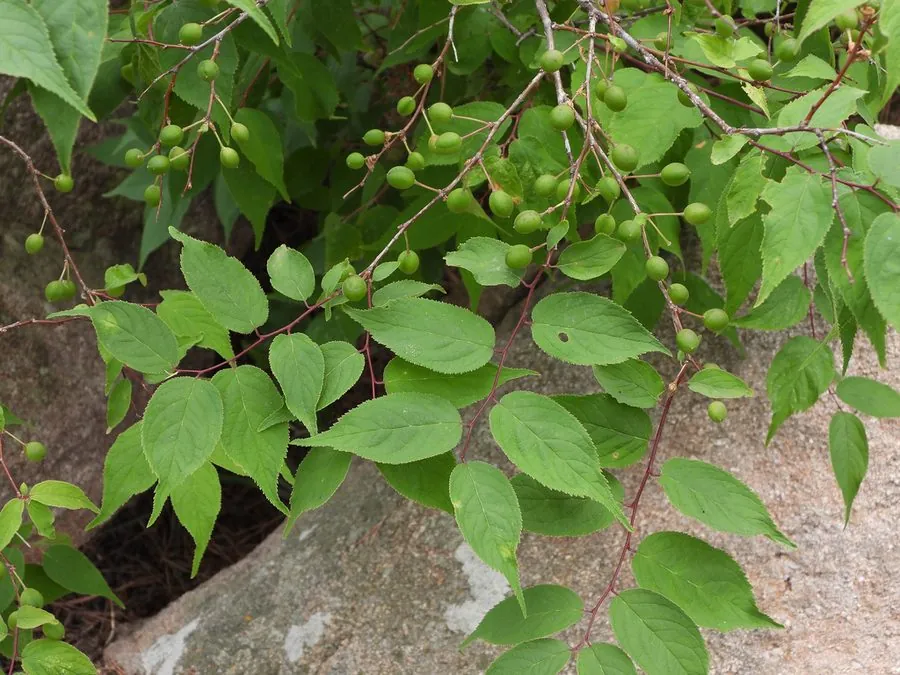

灌木与花木 · 植物界
郁李 Prunus japonica

蔷薇科落叶灌木，春季开粉白色花，夏季结红色小核果，花果兼赏，是北方庭院常见的观花观果灌木。
- 分类
- 门被子植物门纲木兰纲目蔷薇目科蔷薇科属李属
- 栖息环境
- 山坡灌丛、林缘与庭院，喜光耐寒
- 地理分布
- 中国华北、华东、东北；日本、朝鲜半岛有分布
- 保护级别
- 暂无评估；中国未列入国家重点保护野生植物名录
物种志
郁李为蔷薇科李属落叶灌木，高 1–1.5 米，枝条细密，幼枝灰褐色。叶互生，卵形至卵状披针形，边缘具锐锯齿。花单生或 2–3 朵簇生，粉白色至淡粉色，花瓣 5 枚，花期 4–5 月；果实为核果，近球形，成熟时红色，果期 7–8 月。
郁李原产中国华北、华东及东北地区，生于山坡灌丛与林缘，日本、朝鲜半岛也有分布。它喜光，也耐半阴，耐寒、耐旱，适宜疏松肥沃、排水良好的土壤。春季花量繁密、夏季红果累累，是北方庭院常见的观花观果灌木；果可生食或酿酒，种子入药称“郁李仁”，有润肠通便、利水消肿之效。栽培以分株和扦插繁殖为主，花后修剪可保持株形优美。
形态与习性
- 株高1–1.5 米，枝条细密
- 花期4–5 月，花粉白色
- 果期7–8 月，核果红色
- 光照喜光，也耐半阴
- 水分耐旱，忌积水
- 土壤疏松肥沃、排水良好的土壤
- 主要用途庭院观花观果，种子入药
趣味知识
- 郁李的种子入药称“郁李仁”，是常用的润肠通便药。
- 它春季开粉白色小花，夏季结红色小核果，花果兼赏。
- 郁李原产中国，日本、朝鲜半岛也有分布。
- 果实可生食或酿酒，但果肉薄、以观赏为主。